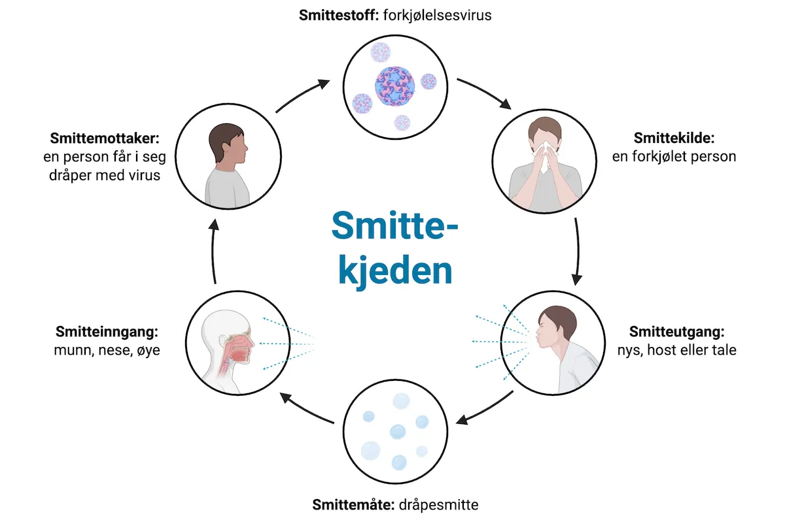

| Ord | Vekt | Hva du skal gjøre | Typisk oppgave |
|---|---|---|---|
| Beskriv | 10 % | Fortell hva. Bruk konkrete eksempler fra caset, hele setninger og fagbegreper. | Hvilke behov er påvirket? Skriv fem sykepleiediagnoser. Hva innebærer autonomi? |
| Forklar | 15 % | Fortell hva, hvordan og hvorfor. Vis sammenhenger og fysiologi. | Forklar fire observasjoner av respirasjon. Hvordan påvirker inaktivitet sirkulasjonen? |
| Gjør rede for | 20 % | Beskriv, forklar og begrunn faglig. Ta hensyn til pasientens ressurser. | Gjør rede for tre eller fire sykepleietiltak til en gitt diagnose og et gitt mål. |
Poeng per oppgave: 10 %-oppgaver gir 0/3/6/10, 15 %-oppgaver 0/4/8/15 og 20 %-oppgaver 0/8/14/20. Karaktergrenser: A 89–100, B 77–88, C 65–76, D 53–64, E 41–52. Middels svar på alt gir D, så det lønner seg å skrive gode svar på de store oppgavene.
For full uttelling må alle ni være med, hvert med eksempel fra caset under riktig behov. Med færre enn sju blir uttellingen lav. Skriv «er påvirket fordi …» eller «kan bli påvirket (risiko) fordi …».
Case: Ingrid Hansen (84 år) bor på sykehjem og er innlagt med mistanke om lungebetennelse. Hun har gått ned 7 kg på tre måneder, spiser små porsjoner, drikker lite og blir sliten under måltidene. Hun hoster når hun drikker og får surklende stemme etter måltider. Ved innleggelsen er hun slapp, har rask og overfladisk respirasjon, klarer ikke å hoste opp slim, har tørr munn, seigt slim, redusert muskelkraft, feber og er mer forvirret enn vanlig.
Behov for sykepleie oppstår når det er et misforhold mellom kravene pasienten står overfor og ressursene pasienten har.
Datasamling er å systematisk og kontinuerlig innhente opplysninger fra og om pasienten og situasjonen. Kartleggingen er fundamentet for resten av sykepleieprosessen. (Bind 2, kap. 10, s. 54)
Sammenlign alltid det pasienten sier med det du ser. Kroppslige uttrykk og det pasienten sier stemmer ikke alltid overens.
Erfaringer, forventninger og forhåndsinformasjon farger hvordan du tolker det du ser, som «briller». Spør deg selv: Hvordan vet jeg dette? Tror jeg det, eller er det slik? Ikke utled behov direkte fra den medisinske diagnosen. (s. 60–61)
Typisk oppgave: «Beskriv observasjoner du vil gjøre av huden, og hva de kan gi informasjon om.» Svar med hva du observerer og hva funnet kan bety.
Hva pasienten har problemer med, eller risiko for. Skriv det du ser eller pasienten sier.
Hvorfor problemet finnes (årsaken), hentet fra caset.
Skriv målet i presens, som om det allerede er nådd.
Hvert tiltak skal svare på NÅR skal HVEM gjøre HVA og HVORDAN, og i en «gjør rede for»-oppgave også HVORFOR (faglig begrunnelse).
Tiltakene skal enten redusere kravene eller styrke ressursene, og de må samsvare med diagnosen og målet.
Slik bygger du et godt svar: (1) nevn pasientens ressurser, (2) beskriv tiltaket konkret, (3) begrunn det med fagkunnskap, (4) knytt det til caset med navn og tall, (5) si hvordan du evaluerer.
Hensikt: å bedømme effekten av sykepleien som er gitt. Målet er utgangspunktet: er det nådd? Svaret er ja, nei eller delvis. Når målet er nådd, er diagnosen borte, og tiltakene kan avsluttes.
Er målet ikke nådd? Spør:
Da er evalueringen ikke siste fase, men starten på en ny runde med et tydeligere utgangspunkt.
Dokumentasjon: skrives i fritekst (evalueringsnotat eller rapport) og knyttes til om tiltakene har gitt ønsket resultat. Det er effekten av tiltakene som dokumenteres. Nådd mål: diagnosen og tiltakene markeres som avsluttet. Ved utskrivning skrives en sykepleieepikrise (hpl. § 45a).
Eksempel: «Spiser hele porsjonen til middag og har gått opp 1 kg på en uke. Målet er nådd. Tiltaket med næringsdrikk avsluttes.»
| Måling | Verdi | Merk |
|---|---|---|
| Respirasjonsfrekvens | ca. 12–20 /min | Telles i et helt minutt. Over 20 eller under 9 kan tyde på alvorlig tilstand. |
| Puls | 60–100 /min | Under 60 er bradykardi, over 100 er takykardi. Vurder også rytme og fylde. |
| Blodtrykk | under 140/90 mmHg | 140–159 systolisk er hypertensjon grad 1. |
| Væskebehov | 30 ml/kg/døgn | Øk ved feber, svetting og diaré. |
| Energibehov | 30 / 35 / 40 kcal/kg | Sengeliggende / oppegående / oppbyggingsfase. Over 70 år: −10 %. Feber: +10 % per grad. |
| KMI | kg / m² | Hos eldre over 70 er under ca. 22 lavt. Utilsiktet vekttap over 5 % på 3 måneder er et faresignal. |
| Urinmengde | 1–2 ml/kg/time (ca. 1,5 l/døgn) | Oliguri er under 500–600 ml/døgn, anuri under 100 ml/døgn. |

Smitteveier: kontaktsmitte (direkte og indirekte), dråpesmitte, luftsmitte, blodsmitte og fekal-oral smitte.
Smittevern handler om å bryte minst ett ledd. Si alltid hvilket ledd tiltaket bryter.
Håndhygiene, hostehygiene, munnbind og renhold: smittevernboka kap. 5, s. 70–72. Boka sier at forurensede omgivelser er kilde til indirekte smitteoverføring.
Håndhygiene skal utføres: før kontakt med pasienten eller pasientens omgivelser, før rene eller aseptiske prosedyrer, etter risiko for kontakt med kroppsvæsker, og etter kontakt med pasienten eller omgivelsene.
Hånddesinfeksjon er førstevalget. Bruk håndvask (40–60 sekunder) ved synlig skitt og ved C. difficile, fordi sporene tåler alkohol.
Etiske prinsipper: autonomi, velgjørenhet, ikke-skade og rettferdighet. Beslutningskompetanse (FARV): pasienten må kunne forstå, anerkjenne, resonnere og velge.
Autonomiprinsippet (Bind 1, kap. 2, s. 41–43)
Begynnelsen: etablere relasjonen, skape kontakt og trygghet, klargjøre rammene (tid, sted og formål) og skape en åpen situasjon.
Midtdelen: få fram pasientens perspektiv, sortere problemene og la pasienten prioritere, med aktiv lytting.
Avslutningen: ta initiativ i god tid, la pasienten oppsummere, justere og gjøre nye avtaler.
Aktiv lytting har en verbal del (åpne spørsmål, speile følelser, oppsummere) og en nonverbal del (øyekontakt, åpen kroppsholdning, kongruens).
Casene er laget for trening og er fiktive. Løsningsforslagene er skrevet etter kriteriene for full uttelling i sensorveiledningen for ordinær eksamen 2025, med fagbegreper fra Kristoffersen mfl. (2021) bind 1–3, smittevernboka (kap. 5, 6 og 18) og Eide og Eide (kap. 4–5). Sidetallene er hentet fra sensorveiledningen og gjelder 4. utgave (2021).